🔗 Lesson 7.3: Interactive Charts with Bokeh
Put one table of data behind several charts, so that selecting points in one chart lights up the same rows in all the others.
🎯 Learning Objectives
By the end of this lesson, you will be able to:
- Build a Bokeh figure by adding glyphs (lines, markers, bars) and save it with
output_file - Put data in a
ColumnDataSourceand refer to its columns by name - Configure a hover tool with formatted fields, including dates
- Link plots by shared ranges (panning) and by a shared data source (brushing), and arrange them with layouts
- Add a widget that works in a standalone file using
js_linkorCustomJS, and choose between Bokeh and Plotly for a job
In This Lesson
🪟 One Table, Many Windows
At the end of Lesson 7.2 your report had three charts on a page, and they ignored each other. You could find the best sales day in the scatter plot, but then you had to hunt for the same day in the trend chart by eye. The questions that matter in exploration are often of exactly that kind: "these unusual points here, where are they there?"
Bokeh is an interactive charting library built around that question. Like Plotly, it describes a chart in Python and lets a JavaScript library (BokehJS) draw it in the browser. Its distinctive idea is how the data is held.
💡 Mental Model: A Table in the Middle of the Room
Imagine your data as one large table in the middle of a room, and each chart as a window in the wall looking at that table from a different side. One window shows revenue against visitors, another shows revenue against the date. If you walk in and put red stickers on thirty rows of the table, every window shows those thirty rows in red, because there is only one table. In Bokeh the table is a ColumnDataSource, the windows are plots, and the stickers are a selection.
🤔 Why This Matters
Linked views are one of the most powerful ideas in exploratory analysis, and they are awkward to get any other way. Bokeh also gives you fine control over each mark on the chart, and it can put working controls (a dropdown, a slider) into a plain HTML file. You will not use Bokeh for every chart. You will be glad to have it when one chart is not enough.
🧱 Figures and Glyphs
Bokeh's everyday interface, bokeh.plotting, works in two moves. You create a figure (an empty plot with axes and a toolbar), then you add glyphs to it. A glyph is a family of visual marks: line, scatter, vbar and so on. If Plotly Express felt like ordering from a menu, Bokeh feels more like Matplotlib: you build the chart piece by piece.
import numpy as np
import pandas as pd
import bokeh
from bokeh.plotting import figure, output_file, save, show
print(bokeh.__version__)
sales = pd.read_csv("data/daily_sales.csv", parse_dates=["date"])
boise = sales[sales["store"] == "Boise"]
p = figure(width=800, height=320, x_axis_type="datetime", title="Boise daily revenue")
p.line(boise["date"], boise["revenue"], line_width=1.5, color="#667eea")
p.yaxis.axis_label = "revenue ($)"
output_file("first.html", title="Boise daily revenue")
save(p)
print(type(p).__name__, "with", len(p.renderers), "glyph renderer")Output
3.10.0
figure with 1 glyph rendererThree things happened. figure(...) made the plot: sizes are in pixels, and x_axis_type="datetime" asks for date labels on the x axis. p.line(x, y) added a line glyph. output_file named the HTML file that this chart should be written to, and save(p) wrote it.
⚠️ How to See the Charts in This Lesson
Where a listing says save(p), type show(p) instead. show writes the same file and then opens it in a new browser tab. The listings use save because the code on this page is tested automatically on a machine with no screen. Each listing is followed by a screenshot and a description of what the live chart does. To see charts inside a Jupyter notebook instead of a browser tab, run from bokeh.io import output_notebook; output_notebook() once at the top, in place of output_file.
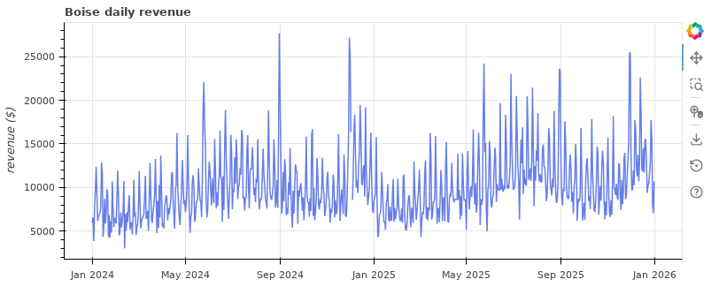
first.html. The column of icons on the right is the toolbar.The toolbar is how a reader drives a Bokeh plot. By default it holds these tools, top to bottom:
| Tool | Name in code | What it does |
|---|---|---|
| Pan | pan | Drag the plot to move around (active by default) |
| Box zoom | box_zoom | Drag a rectangle to zoom into it |
| Wheel zoom | wheel_zoom | Zoom with the mouse wheel, once you click the tool to switch it on |
| Save | save | Download the current view as a PNG |
| Reset | reset | Return to the original view |
You choose the tools with tools="pan,wheel_zoom,reset" when creating the figure. Others you will use today are hover, box_select, lasso_select and tap.
Several Glyphs on One Figure
Each glyph call adds another layer. Here a loop adds one line and one set of markers per store. Bokeh does not pick colors for you, so take them from one of its palettes (a palette is simply a list of color codes). Giving each glyph a legend_label creates the legend.
from bokeh.models import NumeralTickFormatter
from bokeh.palettes import Colorblind
stores = ["Boise", "Bend", "Flagstaff", "Asheville"]
store_palette = [Colorblind[8][i] for i in (0, 1, 3, 6)] # blue, orange, green, pink (skipping the pale yellow)
colors = dict(zip(stores, store_palette))
print(colors)
sales["month_start"] = sales["date"].dt.to_period("M").dt.to_timestamp()
monthly = sales.groupby(["store", "month_start"], as_index=False)["revenue"].sum()
p = figure(width=800, height=360, x_axis_type="datetime", title="Monthly revenue by store")
for store in stores:
one = monthly[monthly["store"] == store]
p.line(one["month_start"], one["revenue"], line_width=2, color=colors[store], legend_label=store)
p.scatter(one["month_start"], one["revenue"], size=6, color=colors[store], legend_label=store)
p.yaxis.formatter = NumeralTickFormatter(format="$0,0")
p.y_range.start = 0
p.legend.location = "top_left"
p.legend.orientation = "horizontal"
p.legend.click_policy = "hide"
output_file("monthly.html", title="Monthly revenue by store")
save(p)
print(len(p.renderers), "renderers,", len(p.legend.items), "legend items")Output
{'Boise': '#0072B2', 'Bend': '#E69F00', 'Flagstaff': '#009E73', 'Asheville': '#CC79A7'}
8 renderers, 4 legend items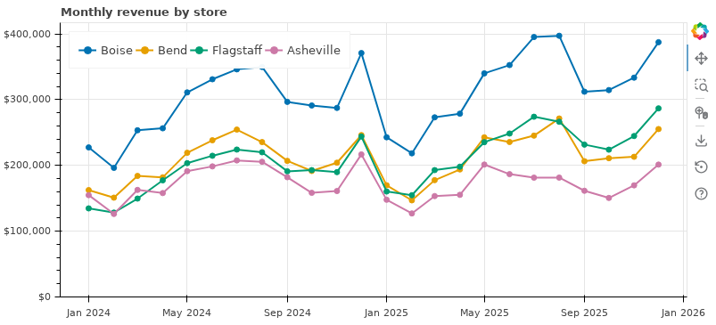
click_policy="hide", clicking a legend entry hides that store.Notice the style: after creating the figure you adjust it through attributes, such as p.yaxis.formatter, p.legend.location, p.xaxis.axis_label and p.title.text_font_size. Everything on a Bokeh plot is an object with properties, and you change the properties.
Bars and Categories
For a categorical axis, pass the list of categories as the figure's x_range. The order of the list is the order on the axis. Like px.bar, a bar glyph draws exactly the numbers you give it, so aggregate first.
days = ["Mon", "Tue", "Wed", "Thu", "Fri", "Sat", "Sun"]
sales["weekday"] = sales["date"].dt.day_name().str[:3]
by_day = sales.groupby("weekday")["revenue"].mean().loc[days]
print(by_day.round(0).tolist())
p = figure(width=600, height=320, x_range=days, title="Mean daily revenue by weekday",
tools="save", toolbar_location=None)
p.vbar(x=days, top=by_day.values, width=0.8, color="#667eea")
p.y_range.start = 0
p.yaxis.formatter = NumeralTickFormatter(format="$0,0")
p.xgrid.grid_line_color = None
output_file("weekday.html", title="Revenue by weekday")
save(p)Output
[6138.0, 5716.0, 5985.0, 6321.0, 7713.0, 10933.0, 9211.0]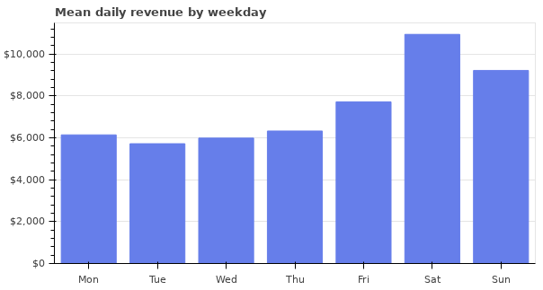
toolbar_location=None hides the toolbar when a chart needs no interaction.| Glyph method | Draws | Key arguments |
|---|---|---|
p.line | One connected line | x, y, line_width, line_dash |
p.scatter | Markers | x, y, size, marker ("circle", "square", "triangle", ...) |
p.vbar, p.hbar | Vertical or horizontal bars | x, top, width / y, right, height |
p.varea | A filled band | x, y1, y2 |
p.step | A stepped line | x, y, mode |
All glyphs share the same styling vocabulary: color (or fill_color and line_color separately), alpha, line_width, legend_label.
🗄️ ColumnDataSource
So far you passed columns of values straight to each glyph. Behind the scenes Bokeh wrapped them in a ColumnDataSource (CDS for short) each time. Creating the source yourself is the step that unlocks everything else in this lesson: hover fields, color by category, and linking.
from bokeh.models import ColumnDataSource
sales["day"] = sales["date"].dt.strftime("%a %b %d, %Y")
sales["promo"] = sales["promo_day"].map({0: "no", 1: "yes"})
tidy = sales[["date", "day", "store", "weekday", "visitors", "transactions", "revenue", "promo"]].dropna()
source = ColumnDataSource(tidy)
print(source.column_names)
print(len(source.data["revenue"]), "rows;", type(source.data["revenue"]).__name__)Output
['index', 'date', 'day', 'store', 'weekday', 'visitors', 'transactions', 'revenue', 'promo']
2897 rows; ndarrayA CDS is a dictionary of equal-length columns. Building one from a DataFrame copies each column in (and adds the DataFrame's index as a column named index). The six days with missing revenue were dropped first, since a marker with no y value cannot be drawn.
With a source, glyph arguments become column names. A string means "look this column up in the source". A plain number still means "use this value for every mark".
from bokeh.transform import factor_cmap
store_color = factor_cmap("store", palette=store_palette, factors=stores)
p = figure(width=800, height=400, title="Daily revenue against foot traffic",
x_axis_label="visitors per day", y_axis_label="revenue ($)")
p.scatter("visitors", "revenue", source=source, size=5, alpha=0.5,
color=store_color, legend_group="store")
p.legend.location = "top_left"
p.yaxis.formatter = NumeralTickFormatter(format="$0,0")
output_file("scatter.html", title="Revenue and foot traffic")
save(p)
print(len(p.renderers), "renderer draws", len(tidy), "markers")Output
1 renderer draws 2897 markers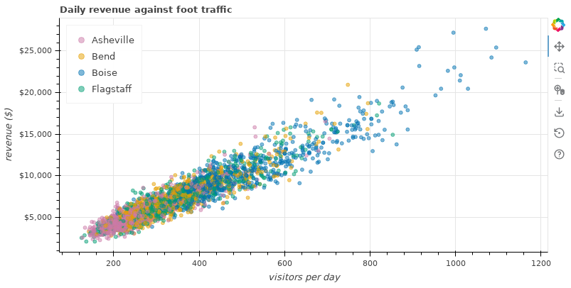
factor_cmap maps each store name to a color in the browser, and legend_group builds the legend from the same column.💡 String or Number?
size=5 makes every marker 5 pixels. size="visitors" would make each marker as many pixels wide as that row's visitor count: a string is always read as a column name. The same goes for color: color="navy" is a color name, but if your source has a column called navy, Bokeh uses the column. Avoid naming columns after colors.
💬 Hover Tools
A hover tool is configured with a list of (label, value) pairs. In the value, @name means "this row's value in column name" and a format in braces controls how it is shown. Because the tool reads from the source, any column in the source can appear, whether or not it is plotted.
from bokeh.models import HoverTool
hover = HoverTool(
tooltips=[
("Day", "@day"),
("Store", "@store"),
("Visitors", "@visitors{0,0}"),
("Revenue", "@revenue{$0,0}"),
("Promotion day", "@promo"),
]
)
source = ColumnDataSource(tidy) # a fresh source for a new page (see Common Mistakes, number 5)
store_color = factor_cmap("store", palette=store_palette, factors=stores)
p = figure(width=800, height=400, title="Hover a point to identify the day",
x_axis_label="visitors per day", y_axis_label="revenue ($)",
tools=["pan", "wheel_zoom", "box_zoom", "reset", hover])
p.scatter("visitors", "revenue", source=source, size=5, alpha=0.5,
color=store_color, legend_group="store")
p.legend.location = "top_left"
p.yaxis.formatter = NumeralTickFormatter(format="$0,0")
output_file("hover.html", title="Hover")
save(p)
print([type(t).__name__ for t in p.toolbar.tools])Output
['HoverTool', 'PanTool', 'WheelZoomTool', 'BoxZoomTool', 'ResetTool']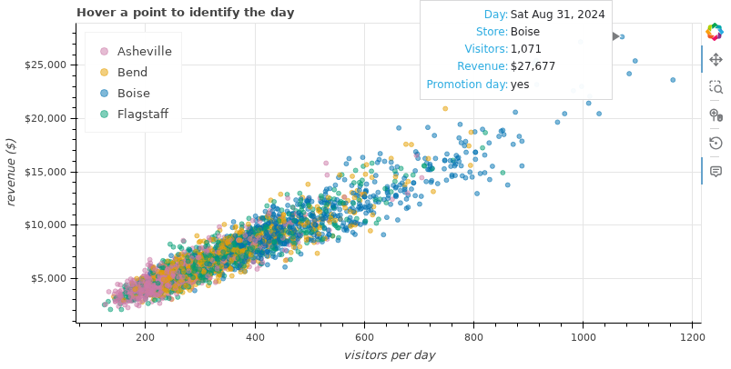
| In a tooltip | Shows |
|---|---|
@revenue | The row's value in the revenue column |
@revenue{$0,0} | Formatted: dollar sign, thousands separators, no decimals |
@rate{0.0%} | A fraction shown as a percentage with one decimal |
@{mean revenue} | A column whose name contains a space |
@date{%b %d, %Y} | A date, only if you also pass formatters={"@date": "datetime"} |
$x, $y | The mouse position in data coordinates |
$index | The row number in the source |
Dates deserve a second look, because the default is unhelpful. The browser stores a date as a count of milliseconds, and that is what @date shows unless you say otherwise. The lesson sidestepped this by making a text column, day, in pandas. The other way is to name a formatter:
date_hover = HoverTool(
tooltips=[("Date", "@date{%a %b %d, %Y}"), ("Revenue", "@revenue{$0,0}")],
formatters={"@date": "datetime"},
mode="vline",
)
print(date_hover.formatters, date_hover.mode)Output
{'@date': 'datetime'} vlinemode="vline" triggers the tooltip for whichever point shares the mouse's x position, without the mouse having to touch the mark. It is the right choice for time series, and you will use this date_hover in the next section.
🔗 Linked Panning and Brushing
There are two ways to connect plots, and they connect different things.
Linked Panning: Share a Range
Every plot has an x_range and a y_range object describing what is in view. Give a second plot the same range object and the two views can never differ: pan or zoom one, and the other follows.
from bokeh.layouts import column
boise_source = ColumnDataSource(tidy[tidy["store"] == "Boise"])
top = figure(width=800, height=230, x_axis_type="datetime", title="Boise: revenue",
tools=["xpan", "xwheel_zoom", "reset", date_hover], active_scroll="xwheel_zoom")
top.line("date", "revenue", source=boise_source, color="#667eea")
top.yaxis.formatter = NumeralTickFormatter(format="$0,0")
bottom = figure(width=800, height=230, x_axis_type="datetime", title="Boise: visitors",
x_range=top.x_range, # the link
tools="xpan,xwheel_zoom,reset", active_scroll="xwheel_zoom")
bottom.line("date", "visitors", source=boise_source, color="#d97706")
output_file("linked_pan.html", title="Linked panning")
save(column(top, bottom))
print(bottom.x_range is top.x_range)Output
True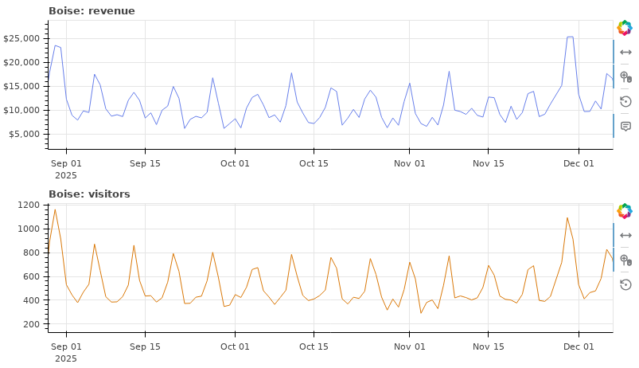
xpan and xwheel_zoom restrict movement to the x direction, which suits time series.Linked Brushing: Share a Source
Selection tools (box_select, lasso_select, tap) record which rows of the source are selected. Any glyph drawing from that source shows the selection. So linked brushing needs no extra code at all: two plots, one source, and a selection tool.
from bokeh.layouts import row
boise_2025 = tidy[(tidy["store"] == "Boise") & (tidy["date"] >= "2025-01-01")]
brush_source = ColumnDataSource(boise_2025)
select_tools = "box_select,lasso_select,tap,reset"
left = figure(width=400, height=360, title="Drag a box here...", tools=select_tools,
active_drag="box_select", x_axis_label="visitors", y_axis_label="revenue ($)")
left.scatter("visitors", "revenue", source=brush_source, size=6, color="#667eea",
nonselection_alpha=0.15, selection_color="#d97706")
right = figure(width=500, height=360, title="...and see when those days were", tools=select_tools,
active_drag="box_select", x_axis_type="datetime")
right.scatter("date", "revenue", source=brush_source, size=6, color="#667eea",
nonselection_alpha=0.15, selection_color="#d97706")
output_file("linked_brush.html", title="Linked brushing")
save(row(left, right))
print(len(brush_source.data["revenue"]), "rows shared by 2 plots")Output
363 rows shared by 2 plots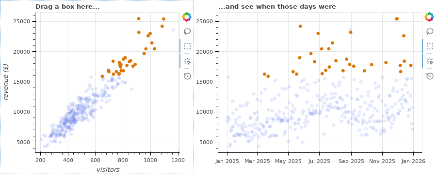
That one drag answered "when were the busiest days?" without a filter, a query or a new chart. Try the reverse on your own copy: select December on the right and watch where those days fall on the left. Press Esc or use the reset tool to clear a selection, and hold Shift to add to one.
✅ This Is the Reason to Learn Bokeh
If the mechanics above felt slower than Plotly Express, that is a fair reaction: Bokeh asks for more lines per chart. Linked brushing is where it pays you back. Two plots and one shared source gave you a tool for asking questions with the mouse.
📐 Layouts
You have already used row and column. They nest, so any arrangement can be built from the two. gridplot lays plots out in a grid and merges their toolbars into one. A Div holds a piece of HTML text, for headings and notes.
from bokeh.layouts import gridplot
from bokeh.models import Div
small = []
for store in stores:
one = ColumnDataSource(monthly[monthly["store"] == store])
f = figure(width=390, height=220, x_axis_type="datetime", title=store, tools="pan,wheel_zoom,reset")
f.line("month_start", "revenue", source=one, line_width=2, color=colors[store])
f.yaxis.formatter = NumeralTickFormatter(format="$0a")
f.xaxis.ticker.desired_num_ticks = 4
small.append(f)
for f in small[1:]: # link every panel to the first one
f.x_range = small[0].x_range
f.y_range = small[0].y_range
small[0].y_range.start = 0
grid = gridplot(small, ncols=2, toolbar_location="right")
heading = Div(text="<h2>Monthly revenue, one panel per store</h2><p>Pan or zoom any panel: the others follow.</p>")
output_file("grid.html", title="Small multiples")
save(column(heading, grid))
print(type(grid).__name__, len(grid.children), "plots")Output
GridPlot 4 plots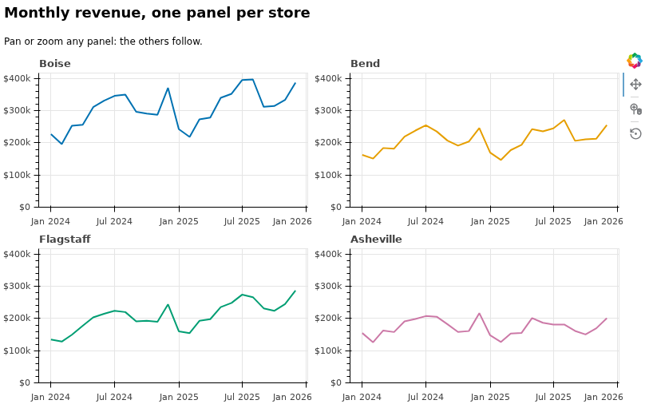
gridplot. Bokeh has no facet_col, so this is the pattern.Sizes so far were fixed in pixels. To make a plot or a layout fill the width of the page, as you would for a report read on screens of different sizes, set sizing_mode="stretch_width" on it (and keep a fixed height).
🎚️ Widgets Without a Server
Bokeh has sliders, dropdowns, checkboxes and buttons. The question that decides how you use them is: when the reader moves a slider, what code runs?
Your saved HTML file is opened in a browser, possibly on a computer with no Python installed. The only code that can run there is JavaScript. So in a standalone file, a widget's reaction must be expressed in JavaScript. Bokeh offers two levels, and the first needs no JavaScript from you at all.
Level 1: js_link, Property to Property
widget.js_link("value", target, "property") says "whenever this widget's value changes, copy it into that property". Here one slider controls the marker size and another moves a horizontal reference line (a Span).
from bokeh.models import Slider, Span
brush_source = ColumnDataSource(boise_2025)
p = figure(width=800, height=360, title="Boise 2025: daily revenue", x_axis_type="datetime",
tools="pan,wheel_zoom,reset")
dots = p.scatter("date", "revenue", source=brush_source, size=6, alpha=0.6, color="#667eea")
p.yaxis.formatter = NumeralTickFormatter(format="$0,0")
threshold = Span(location=15000, dimension="width", line_color="#d97706", line_width=2, line_dash="dashed")
p.add_layout(threshold)
size_slider = Slider(start=2, end=14, value=6, step=1, title="Marker size", width=300)
size_slider.js_link("value", dots.glyph, "size")
level_slider = Slider(start=5000, end=28000, value=15000, step=500, title="Reference line ($)", width=300)
level_slider.js_link("value", threshold, "location")
output_file("sliders.html", title="Sliders")
save(column(row(size_slider, level_slider), p))
print(type(dots).__name__, type(dots.glyph).__name__, dots.glyph.size)Output
GlyphRenderer Scatter 6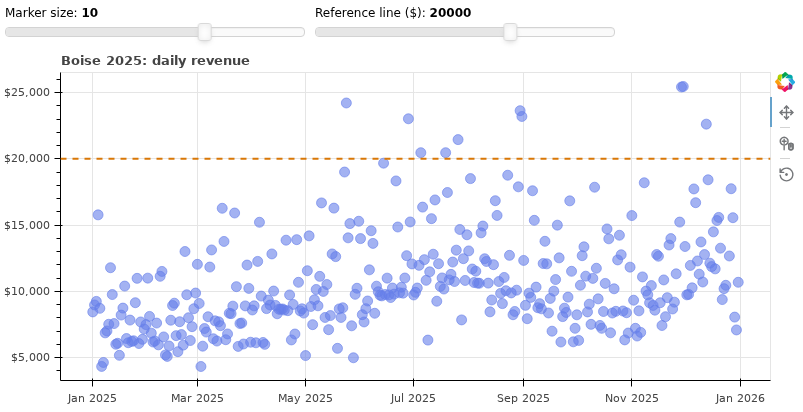
.glyph holds the visual properties that a widget can drive.Level 2: CustomJS, a Few Lines of JavaScript
When the reaction is more than copying a value, attach a CustomJS callback: a snippet of JavaScript, plus a dictionary of the Bokeh objects it needs. The standard example is a dropdown that filters the data. The plot draws through a view (CDSView) that shows only the rows passing a filter, and the dropdown changes the filter.
from bokeh.models import CDSView, CustomJS, GroupFilter, Select
source = ColumnDataSource(tidy)
store_filter = GroupFilter(column_name="store", group="Boise")
view = CDSView(filter=store_filter)
p = figure(width=800, height=360, title="Daily revenue against foot traffic",
x_axis_label="visitors per day", y_axis_label="revenue ($)", tools="pan,wheel_zoom,reset")
p.scatter("visitors", "revenue", source=source, view=view, size=5, alpha=0.5, color="#667eea")
p.yaxis.formatter = NumeralTickFormatter(format="$0,0")
picker = Select(title="Store", value="Boise", options=stores, width=200)
picker.js_on_change("value", CustomJS(args=dict(flt=store_filter, plot=p), code="""
flt.group = cb_obj.value; // cb_obj is the widget that changed
plot.title.text = cb_obj.value + ": daily revenue against foot traffic";
"""))
output_file("select.html", title="Store picker")
save(column(picker, p))
print(view.filter.column_name, "=", view.filter.group)Output
store = Boise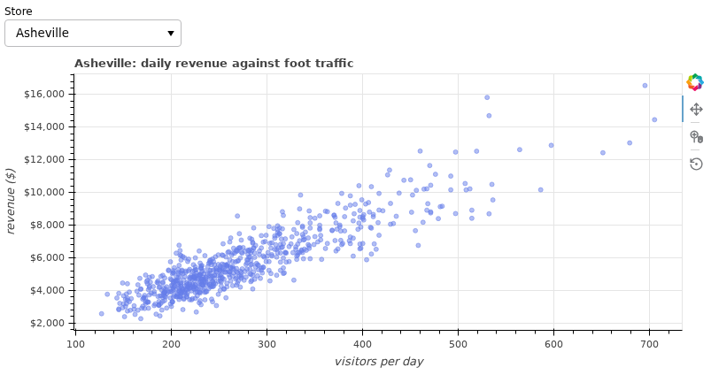
Read the JavaScript as you would read Python: cb_obj.value is the dropdown's new value, flt.group = ... sets a property, and a line ends with a semicolon. The names flt and plot exist because you passed them in args. Assigning to a property of a Bokeh object is enough to make the chart redraw.
💡 What About Python Callbacks?
Bokeh widgets also have on_change, which takes a Python function. It works only when the chart is served by a running Bokeh server (bokeh serve app.py), a Python process that stays connected to the browser. In a file written by output_file there is no such process, and Python callbacks are silently ignored. For controls that need Python (reloading data, refitting a model), the next lesson's tool, Streamlit, is the simpler route.
💾 Saving and Sharing
output_file(filename, title=..., mode=...) sets where the next save or show writes. The title is the browser tab's title. As with Plotly, the file needs its JavaScript library from somewhere, and mode decides where.
from pathlib import Path
p = figure(width=600, height=300, title="Mean daily revenue by weekday", x_range=days)
p.vbar(x=days, top=by_day.values, width=0.8, color="#667eea")
output_file("weekday_cdn.html", title="Weekday", mode="cdn") # the default
save(p)
output_file("weekday_inline.html", title="Weekday", mode="inline")
save(p)
for name in ["weekday_cdn.html", "weekday_inline.html"]:
print(f"{name:<22} {Path(name).stat().st_size / 1024:8,.0f} KB")Output (sizes differ slightly between Bokeh versions)
weekday_cdn.html 7 KB
weekday_inline.html 1,362 KBmode="cdn"(default): a small file that loads BokehJS from Bokeh's public server. The reader must be online.mode="inline": BokehJS is written into the file. Larger, and it works offline and stays openable for years.
🛑 The Same Warning as Plotly
A saved Bokeh file contains every column of every ColumnDataSource it uses, including columns that no glyph or tooltip displays. Build your source from a DataFrame that holds only the columns the chart needs, at the level of detail you are willing to publish. That is why this lesson made tidy before making source.
Static Images and Embedding
The save tool in the toolbar downloads a PNG of what is on screen, and for occasional use that is all you need. Bokeh can also export from code with bokeh.io.export_png(p, filename="chart.png"). That function drives a real browser through Selenium, so it requires the selenium package from Lesson 6.3 together with Chrome or Firefox and the matching driver program on your system PATH. It was not run for this page: on a machine without a driver on the PATH it stops with a RuntimeError that says which programs it looked for. The screenshots in this lesson were taken from the saved HTML files with a headless browser.
To place a chart inside a web page of your own, bokeh.embed.components(p) returns a <script> and a <div> to paste into the page, which must also load BokehJS. When that is more than you need, an <iframe> pointing at the saved file works everywhere, exactly as for Plotly.
⚖️ Bokeh or Plotly?
Both produce interactive charts in a browser from Python, both save to standalone HTML, and both are free and open source. They differ in what is easy.
| You want | Better fit | Why |
|---|---|---|
| A good interactive chart from a tidy table in one line | Plotly | Plotly Express handles color, facets, legends and hover automatically |
| Statistical chart types: box, violin, histogram, trendline, heatmap | Plotly | Built in. In Bokeh you compute the statistics and draw the pieces |
| Facets or an animation slider | Plotly | facet_col and animation_frame are one argument each |
| Selecting points in one chart to highlight them in others | Bokeh | A shared ColumnDataSource gives linked brushing with no extra code |
| Dropdowns and sliders that filter or restyle, inside a standalone file | Bokeh | js_link, CustomJS and views are designed for it |
| Exact control of each mark, tool and layout cell | Bokeh | Everything is an object with properties, as in Matplotlib |
| A static PNG or PDF from code | Plotly | write_image needs one extra package. Bokeh needs Selenium and a driver |
A short version: Plotly for a chart, Bokeh for charts that talk to each other. If you are unsure, start with Plotly Express, and switch when you catch yourself wishing that a selection in one chart would show up in another.
⚠️ Common Mistakes
1. Arguments from Old Tutorials
p = figure(plot_width=600, plot_height=300)Error
AttributeError: unexpected attribute 'plot_width' to figure, similar attributes are outer_width, width or min_widthWhat it means: a great deal of Bokeh code on the web was written for versions before 3.0, where the size arguments were plot_width and plot_height. Fix: width and height, as the message suggests.
A second relic gives a warning instead of an error. The code below catches it so that you can read it.
import warnings
p = figure(width=300, height=200)
with warnings.catch_warnings(record=True) as caught:
warnings.simplefilter("always")
p.circle([1, 2, 3], [4, 5, 6], size=10)
print(caught[0].category.__name__ + ":", caught[0].message)Output
BokehDeprecationWarning: 'circle() method with size value' was deprecated in Bokeh 3.4.0 and will be removed, use 'scatter(size=...) instead' instead.Fix: p.scatter(x, y, size=10). Markers of every shape are drawn by scatter; choose the shape with marker="square" and so on.
2. A Misspelled Column Name Gives a Blank Plot
p = figure(width=400, height=250)
renderer = p.scatter("visitors", "revenu", source=source) # typo: revenu
print("no exception raised; y =", renderer.glyph.y, "| column exists:", "revenu" in source.column_names)Output
no exception raised; y = revenu | column exists: FalsePython raises nothing. When you save or show the plot, Bokeh prints a validation message in the terminal or under the notebook cell, and the plot appears with axes and no points:
ERROR:bokeh.core.validation.check:E-1001 (BAD_COLUMN_NAME): Glyph refers to nonexistent column name.
This could either be due to a misspelling or typo, or due to an expected column being missing. :
y='revenu' [closest match: 'revenue']What it means: the glyph's y points to a column the source does not have. Fix: an empty Bokeh plot is nearly always this. Read the terminal output for E-1001, and compare against source.column_names.
3. Columns of Different Lengths
with warnings.catch_warnings(record=True) as caught:
warnings.simplefilter("always")
bad = ColumnDataSource({"day": ["Mon", "Tue", "Wed"], "revenue": [6138, 5716]})
print(caught[0].category.__name__ + ":", caught[0].message)Output
BokehUserWarning: ColumnDataSource's columns must be of the same length. Current lengths: ('day', 3), ('revenue', 2)What it means: a source is a table, and a table's columns are all the same length. This is only a warning, and the plot that follows will be wrong or empty. Fix: build sources from a DataFrame, which cannot have ragged columns, and make sure any column you add later has the same length.
4. A Date Tooltip Full of Digits
A tooltip defined as ("Date", "@date") shows something like 1.72506e+12. That is the date as milliseconds since 1970, which is how the browser stores it. Fix: give the field a date format and name the formatter, "@date{%b %d, %Y}" with formatters={"@date": "datetime"}, or add a ready-made text column in pandas as this lesson did with day.
5. Reusing a Source on a Second Page
shared = ColumnDataSource({"x": [1, 2, 3], "y": [4, 5, 6]})
first = figure(width=300, height=200)
first.scatter("x", "y", source=shared)
output_file("page_one.html")
save(first)
second = figure(width=300, height=200)
second.scatter("x", "y", source=shared) # the same source again
output_file("page_two.html")
save(second)Error (the id in the message will differ)
RuntimeError: Models must be owned by only a single document, UnionRenderers(id='p2046', ...) is already in a docWhat it means: each save or show builds a document, and a Bokeh object can belong to only one. The source went into the first page and cannot join the second. You will meet this when you rerun a notebook cell that shows a layout built from objects made in an earlier cell. Fix: sharing a source within one page is the whole point, but for a new page create a new one: source = ColumnDataSource(tidy). That is why several listings in this lesson begin by making a fresh source. Creating figures and sources in the same cell that saves them avoids the problem entirely.
6. Expecting Brushing Between Two Separate Sources
The opposite slip. If, on one page, you write ColumnDataSource(df) twice, once for each plot, you have two tables with the same contents, and a selection in one plot is unknown to the other. No error appears. The plots just do not respond to each other. Fix: create the source once, keep it in a variable, and pass that same variable to every glyph that should be linked.
🛠️ Project: The Linked Store Explorer
Build the tool you wished for at the start of the lesson: a page where a reader picks a store, selects a group of days in any chart, and sees those same days everywhere, with a one-line summary of the selection. Everything goes into one standalone file, store_explorer.html. Allow about 40 minutes.
🛠️ Step 1: One minimal source (6 min)
Start from a fresh load so that the project runs by itself. Keep only the columns the page will use, and create one source.
sales = pd.read_csv("data/daily_sales.csv", parse_dates=["date"])
sales["day"] = sales["date"].dt.strftime("%a %b %d, %Y")
sales["promo"] = sales["promo_day"].map({0: "no", 1: "yes"})
table = sales[["date", "day", "store", "visitors", "revenue", "promo"]].dropna().reset_index(drop=True)
source = ColumnDataSource(table)
store_filter = GroupFilter(column_name="store", group="Boise")
view = CDSView(filter=store_filter)
print(len(table), "rows;", source.column_names)Output
2897 rows; ['index', 'date', 'day', 'store', 'visitors', 'revenue', 'promo']🛠️ Step 2: Three plots on the same source and view (12 min)
A scatter of revenue against visitors, and two time series. All three use source and view, so they are linked by selection. The two time series also share an x_range, so they are linked by panning. A small helper function keeps the styling in one place.
TOOLS = "box_select,lasso_select,tap,wheel_zoom,pan,reset"
tips = [("Day", "@day"), ("Visitors", "@visitors{0,0}"), ("Revenue", "@revenue{$0,0}"), ("Promotion day", "@promo")]
promo_marker = factor_cmap("promo", palette=["#667eea", "#d97706"], factors=["no", "yes"])
def add_points(fig, x, y):
fig.scatter(x, y, source=source, view=view, size=6, color=promo_marker, alpha=0.7,
nonselection_alpha=0.12, selection_line_color="black")
fig.add_tools(HoverTool(tooltips=tips))
return fig
scatter = add_points(figure(width=420, height=470, tools=TOOLS, active_drag="box_select",
title="Revenue against visitors",
x_axis_label="visitors per day", y_axis_label="revenue ($)"),
"visitors", "revenue")
scatter.yaxis.formatter = NumeralTickFormatter(format="$0,0")
ts_revenue = add_points(figure(width=560, height=235, tools=TOOLS, active_drag="box_select",
x_axis_type="datetime", title="Revenue by day"),
"date", "revenue")
ts_revenue.yaxis.formatter = NumeralTickFormatter(format="$0,0")
ts_visitors = add_points(figure(width=560, height=235, tools=TOOLS, active_drag="box_select",
x_axis_type="datetime", title="Visitors by day",
x_range=ts_revenue.x_range),
"date", "visitors")
print(ts_visitors.x_range is ts_revenue.x_range, len(scatter.renderers + ts_revenue.renderers + ts_visitors.renderers))Output
True 3🛠️ Step 3: The store picker (6 min)
The dropdown changes the filter, and also clears any selection, since selected rows of the previous store are no longer visible.
picker = Select(title="Store", value="Boise", options=["Boise", "Bend", "Flagstaff", "Asheville"], width=200)
picker.js_on_change("value", CustomJS(args=dict(flt=store_filter, source=source), code="""
flt.group = cb_obj.value;
source.selected.indices = [];
"""))🛠️ Step 4: A live summary of the selection (8 min)
The list of selected row numbers lives at source.selected.indices. A callback on that property can read the rows and write a sentence into a Div. This is the longest piece of JavaScript in the course, and it is a plain loop: add up revenue and visitors over the selected rows, then build a string.
summary = Div(text="<b>Nothing selected.</b> Drag a box in any chart.", width=560)
source.selected.js_on_change("indices", CustomJS(args=dict(source=source, summary=summary), code="""
const rows = source.selected.indices;
if (rows.length === 0) {
summary.text = "<b>Nothing selected.</b> Drag a box in any chart.";
return;
}
let revenue = 0, visitors = 0, promo = 0;
for (const i of rows) {
revenue += source.data["revenue"][i];
visitors += source.data["visitors"][i];
if (source.data["promo"][i] === "yes") { promo += 1; }
}
const mean = Math.round(revenue / rows.length).toLocaleString("en-US");
const perVisitor = (revenue / visitors).toFixed(2);
summary.text = "<b>" + rows.length + " days selected.</b> Mean revenue $" + mean +
", $" + perVisitor + " per visitor, " + promo + " promotion days.";
"""))🛠️ Step 5: Lay out, save and test (8 min)
header = Div(text="<h1>Pinecrest Store Explorer</h1>"
"<p>Choose a store. Orange points are promotion days. Drag a box in any chart to select days: "
"the same days are highlighted in all three. Press Esc to clear. (Fictional course data.)</p>", width=980)
page = column(header, row(picker, summary), row(scatter, column(ts_revenue, ts_visitors)))
output_file("store_explorer.html", title="Pinecrest Store Explorer", mode="cdn")
save(page)
print(f"store_explorer.html {Path('store_explorer.html').stat().st_size / 1024:,.0f} KB")Output (the size will differ slightly between Bokeh versions)
store_explorer.html 154 KBOpen the file (or use show(page)) and test it as a reader would. Select the top right corner of the scatter: when were those days? Select December in a time series: where does it sit in the scatter? Switch to Asheville and repeat.
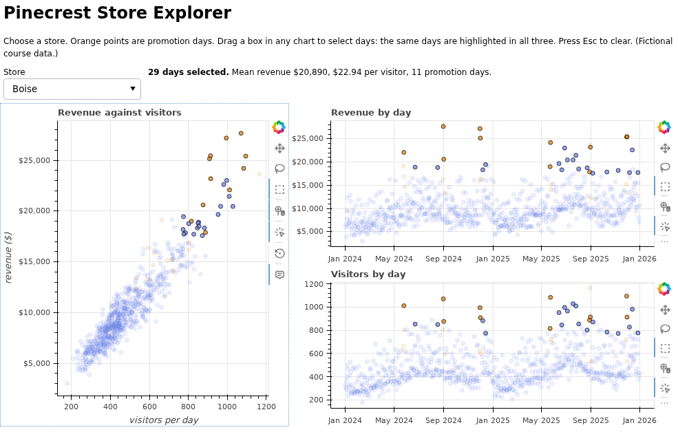
✅ Project Completion Checklist
- All glyphs draw from one
ColumnDataSourcethrough oneCDSView - A box drawn in any of the three charts highlights the same days in the other two
- Panning or zooming one time series moves the other
- The dropdown switches store and clears the selection
- The summary line changes when you select, and resets when you press Esc
- Hovering a point shows the day with formatted visitors and revenue
store_explorer.htmlopens by double-click, with no Python running
🏋️ Hands-on Exercises
🏋️ Exercise 1: Horizontal Bars with Hover
Draw total 2025 revenue per store as horizontal bars, largest at the top, with a tooltip showing the store and the revenue in whole dollars. Use a ColumnDataSource.
💡 Hint
For a categorical y axis pass y_range= a list of store names (the first item is drawn at the bottom). p.hbar(y="store", right="revenue", height=0.7, source=...). The shortcut figure(tooltips=[...]) adds a hover tool.
✅ Solution
totals = (sales[sales["date"].dt.year == 2025].groupby("store", as_index=False)["revenue"].sum()
.sort_values("revenue"))
print(totals.round(0).to_string(index=False))
p = figure(width=650, height=260, y_range=totals["store"].tolist(), title="Store revenue, 2025",
tools="save", tooltips=[("Store", "@store"), ("Revenue", "@revenue{$0,0}")])
p.hbar(y="store", right="revenue", height=0.7, source=ColumnDataSource(totals), color="#667eea")
p.x_range.start = 0
p.xaxis.formatter = NumeralTickFormatter(format="$0.0a")
output_file("ex1.html", title="Exercise 1")
save(p)Output
store revenue
Asheville 2017699.0
Bend 2569350.0
Flagstaff 2717997.0
Boise 3846406.0🏋️ Exercise 2: Two Stores, One Timeline
Stack two time series of daily visitors, Bend above Flagstaff, so that panning or zooming either one moves both along the x axis. Add a vline hover with a formatted date to each.
💡 Hint
Share x_range. Each figure needs its own HoverTool object with formatters={"@date": "datetime"}.
✅ Solution
def visitors_plot(store, **kwargs):
fig = figure(width=800, height=220, x_axis_type="datetime", title=f"{store}: visitors per day",
tools="xpan,xwheel_zoom,reset", active_scroll="xwheel_zoom", **kwargs)
fig.line("date", "visitors", source=ColumnDataSource(sales[sales["store"] == store][["date", "visitors"]]))
fig.add_tools(HoverTool(tooltips=[("Date", "@date{%a %b %d, %Y}"), ("Visitors", "@visitors{0,0}")],
formatters={"@date": "datetime"}, mode="vline"))
return fig
bend = visitors_plot("Bend")
flagstaff = visitors_plot("Flagstaff", x_range=bend.x_range)
output_file("ex2.html", title="Exercise 2")
save(column(bend, flagstaff))
print(flagstaff.x_range is bend.x_range, flagstaff.y_range is bend.y_range)Output
True FalseOnly the x range is shared, so each store keeps its own y scale. Whether to share y as well depends on the question: shared for comparing levels, separate for comparing shapes.
🏋️ Exercise 3: Brush the Weekdays
For Flagstaff, build two linked plots from one source (the tidy table from the ColumnDataSource section has the columns you need): a scatter of visitors against revenue, and a plot with the weekday (categorical, Monday to Sunday) on the x axis and revenue on the y axis. Selecting a column of weekday points should reveal where that weekday sits in the scatter.
💡 Hint
A categorical axis works with a source column too: figure(x_range=days) and scatter("weekday", "revenue", source=...).
✅ Solution
flag = tidy.loc[tidy["store"] == "Flagstaff", ["weekday", "visitors", "revenue"]]
flag_source = ColumnDataSource(flag)
style = dict(source=flag_source, size=5, color="#667eea", alpha=0.5,
nonselection_alpha=0.08, selection_color="#d97706")
a = figure(width=420, height=360, tools="box_select,reset", active_drag="box_select",
title="Flagstaff: revenue against visitors")
a.scatter("visitors", "revenue", **style)
b = figure(width=420, height=360, tools="box_select,reset", active_drag="box_select",
x_range=days, title="Revenue by weekday: select a column")
b.scatter("weekday", "revenue", **style)
output_file("ex3.html", title="Exercise 3")
save(row(a, b))
print(flag.groupby("weekday")["revenue"].median().loc[days].round(0).tolist())Output
[5107.0, 5064.0, 5460.0, 5535.0, 7210.0, 9521.0, 8424.0]Select the Saturday column and the upper right of the scatter lights up; select Tuesday and the lower left does. The weekly rhythm you measured in Lesson 7.1 becomes something you can feel with the mouse.
🏋️ Exercise 4: A Threshold Counter (Stretch)
Extend the sliders example: when the reader moves the "Reference line" slider, a Div under it should say how many of Boise's 2025 days had revenue at or above the line. Use one CustomJS callback that both moves the line and updates the text.
💡 Hint
In JavaScript, source.data["revenue"] is an array. Loop over it with for (const value of ...) and count.
✅ Solution
brush_source = ColumnDataSource(boise_2025)
p = figure(width=800, height=340, title="Boise 2025: daily revenue", x_axis_type="datetime",
tools="pan,wheel_zoom,reset")
p.scatter("date", "revenue", source=brush_source, size=6, alpha=0.6, color="#667eea")
p.yaxis.formatter = NumeralTickFormatter(format="$0,0")
line = Span(location=15000, dimension="width", line_color="#d97706", line_width=2, line_dash="dashed")
p.add_layout(line)
start_count = int((brush_source.data["revenue"] >= 15000).sum())
counter = Div(text=f"<b>{start_count}</b> days at or above $15,000")
slider = Slider(start=5000, end=28000, value=15000, step=500, title="Reference line ($)", width=300)
slider.js_on_change("value", CustomJS(args=dict(line=line, source=brush_source, counter=counter), code="""
line.location = cb_obj.value;
let n = 0;
for (const value of source.data["revenue"]) {
if (value >= cb_obj.value) { n += 1; }
}
counter.text = "<b>" + n + "</b> days at or above $" + cb_obj.value.toLocaleString("en-US");
"""))
output_file("ex4.html", title="Exercise 4")
save(column(row(slider, counter), p))
print(start_count, "days at or above 15,000 to start with")Output
45 days at or above 15,000 to start withThe starting text is computed in Python, and every later value in JavaScript, by the same rule. Checking that the two agree at the start is a simple test of your callback.
🎯 Quick Quiz
🎯 Check Your Understanding
Question 1: Two plots sit side by side. What makes a box selection in one highlight the same rows in the other?
Question 2: A tooltip defined as ("Date", "@date") displays 1.72506e+12. What fixes it?
Question 3: You save a page with output_file and email the HTML file. It contains a Select widget. Which kind of callback will work for the person who opens it?
Question 4: What does this print?
quiz_p = figure(width=300, height=200)
quiz_p.line([1, 2, 3], [4, 5, 6])
quiz_p.scatter([1, 2, 3], [4, 5, 6], size=8)
print(len(quiz_p.renderers), type(quiz_p.renderers[1].glyph).__name__)Question 5: Which job is the best reason to choose Bokeh over Plotly?
❓ Common Questions at This Stage
Do I have to learn JavaScript to use Bokeh?
No. Figures, glyphs, hover, linked panning and linked brushing need none, and js_link covers simple widget connections. CustomJS needs a few lines, and for typical callbacks they are assignments, a loop and an if, which read much like Python. When a callback does not work, open the browser's developer tools (F12) and look at the Console tab: JavaScript errors appear there, not in Python.
After rerunning cells, my output looks doubled or out of date. Why?
Bokeh keeps some state for the session: the output file you named, and a "current document". If output starts to look doubled or stale, call bokeh.io.reset_output() or restart the kernel, and recreate your figures and sources in the same cell that shows them. Building fresh objects for each page is the safe habit, for the reason shown in Common Mistakes number 5.
How much data can a ColumnDataSource hold?
As with Plotly, all of it travels to the browser. Tens of thousands of rows are fine. For more, add output_backend="webgl" to the figure to draw with the graphics card, and beyond a few hundred thousand, aggregate first. The usual privacy point applies too: every column in the source is in the file.
What is a Bokeh server, and do I need one?
A Bokeh server is a Python program that stays running and keeps your Python objects in sync with the browser, so that widget callbacks can be Python functions. It is powerful, and it means your chart is now an application that somebody must host. Nothing in this lesson needs it. If you want Python behind your controls, try Streamlit in the next lesson first: it is usually less work.
🌟 Going Further: Bonus Challenge
Add a second widget to the project: a CheckboxGroup with one box, "Promotion days only". When it is ticked, the charts should show only rows where promo is "yes" for the chosen store. You will need a second GroupFilter and a way to combine two filters: look up IntersectionFilter (or the & operator between filters) and AllIndices in the Bokeh reference. Check that the selection summary still reports correct numbers.
📓 Learning Journal
Take five minutes to write in your learning journal (the journal.md file you started in Lesson 0.1, or a paper notebook). Jot down:
- Key concepts you learned today
- Techniques that clicked (and the ones that have not, yet)
- Questions or confusion to come back to
- Ideas to try on your own
- Progress and feelings: how did this lesson go for you?
✍️ This lesson's prompt: Use your store explorer for five minutes on a store other than Boise. Write down one thing you noticed by brushing that you had not seen in any earlier lesson's chart, and one question it raised that the page cannot answer.
📝 Lesson Summary
🎓 Key Takeaways
- A Bokeh chart is a
figureplus glyphs (line,scatter,vbar, ...), adjusted through properties such asp.legend.location.output_filenames the HTML file;savewrites it andshowalso opens it. - A
ColumnDataSourceis the table behind the chart. Glyph arguments given as strings are column names. - Hover tooltips use
@column{format}; dates needformatters={"@date": "datetime"}. - Share a range for linked panning. Share a source for linked brushing.
row,columnandgridplotarrange plots, widgets andDivtext.- In a standalone file, widgets act through JavaScript:
js_linkfor property-to-property,CustomJSfor anything more. Python callbacks need a server. - Plotly for one chart quickly; Bokeh for charts that respond to each other.
🏆 What You've Accomplished
- Built line, scatter and bar charts glyph by glyph, with palettes, legends and formatted axes
- Linked plots two ways and used a selection to answer a question with the mouse
- Wrote working JavaScript callbacks for a dropdown and a live summary
- Shipped a three-chart linked explorer as one HTML file
🔭 Looking Ahead
Your explorer's controls run in the reader's browser, which limited them to what a few lines of JavaScript can do. In Lesson 7.4: Dashboards with Streamlit the controls run your Python: a date picker that re-filters a DataFrame with pandas, a metric that recomputes, a button that downloads a CSV. The price is that a Python process must be running. You will build a small Pinecrest sales dashboard and learn what it takes to put one in front of other people.
📋 Before the Next Lesson
- Keep
store_explorer.htmlnext tosales_explorer.htmlfrom Lesson 7.2 and compare how each felt to build and to use - Open the explorer, press F12, and find the Console tab, so that you know where JavaScript errors would appear
- Check that Streamlit is installed:
streamlit versionin your terminal (with the environment active) should print a version starting with 1
🌱 Encouragement for the Journey
Today you wrote JavaScript, possibly for the first time, and a page full of charts obeyed it. If the callbacks felt like copying incantations, notice that you could read every line: a value assigned, a loop, a sum. You do not need to become a web developer. You needed just enough to connect a dropdown to a table, and you have it.